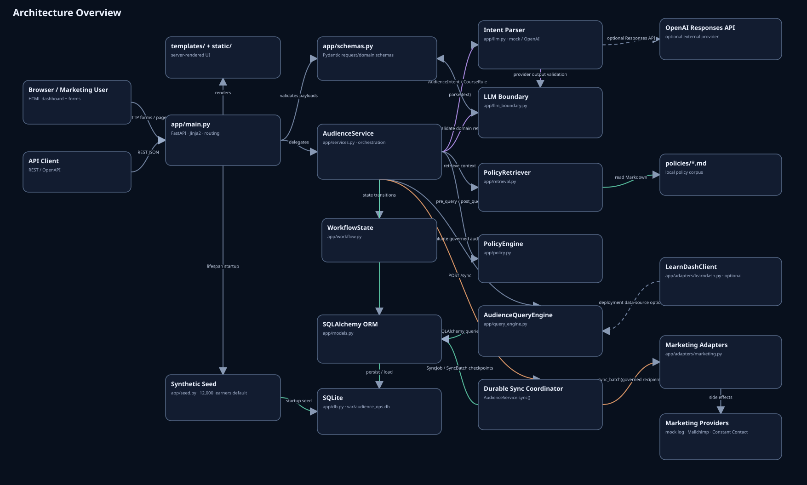
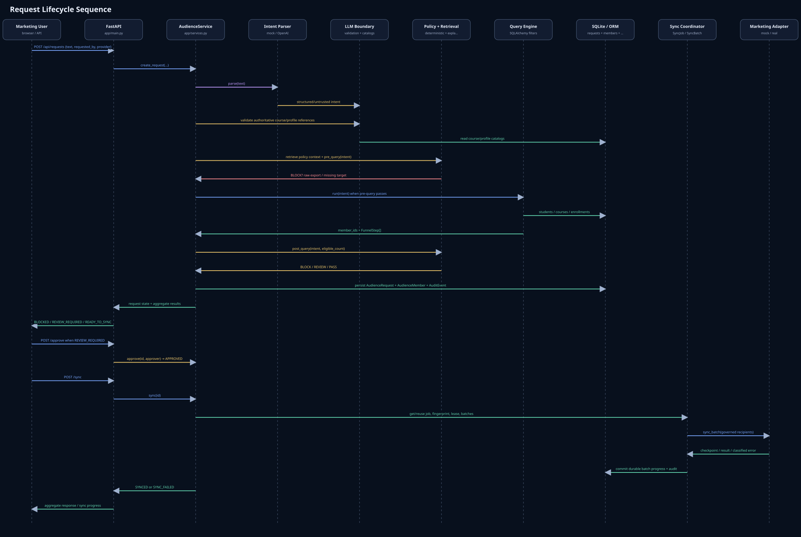
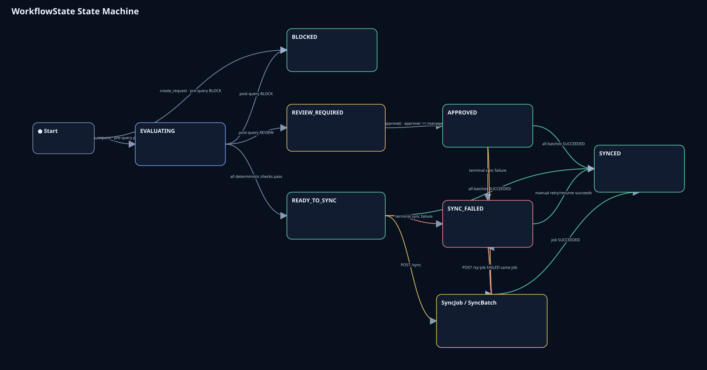
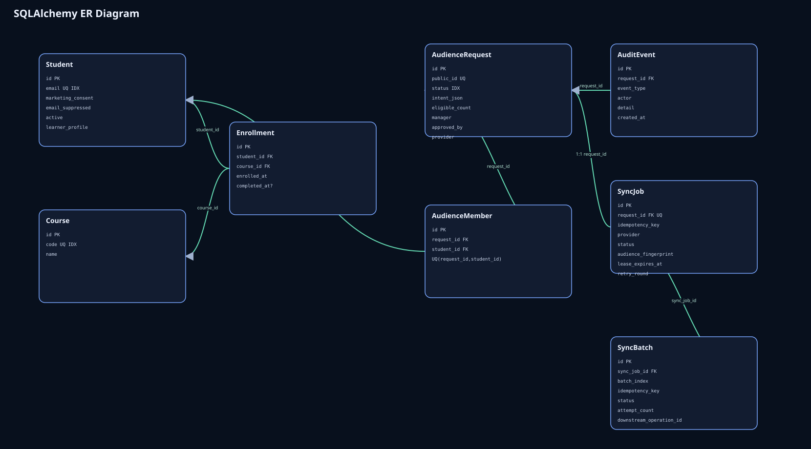
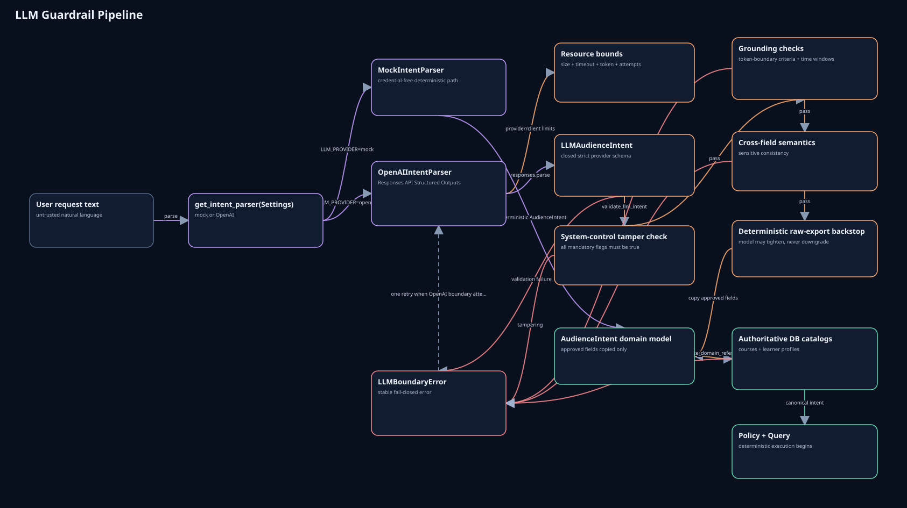
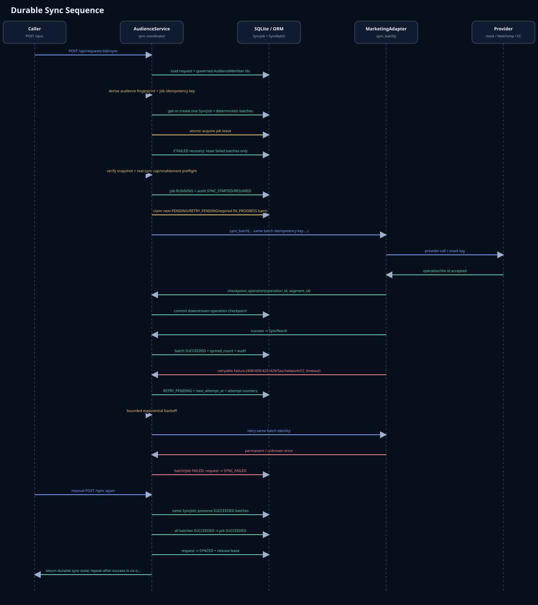
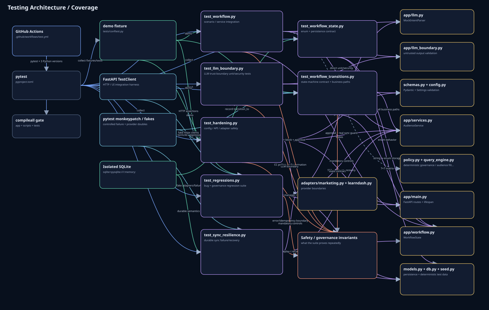

Architecture OverviewSystem components, trust boundaries, data flow,
persistence, and external integrations.
System view

Request Lifecycle SequenceNatural-language request → governed audience →
approval → durable synchronization.
Runtime flow

WorkflowState State MachinePublic workflow states, legal transitions, and
SyncJob / SyncBatch execution internals.
State model

SQLAlchemy ER DiagramORM tables, fields, foreign keys, constraints, and
relationships.
Persistence

LLM Guardrail PipelineHow untrusted model output passes strict schema,
grounding, and catalog validation before deterministic execution.
AI safety boundary

Durable Sync SequenceIdempotency, batching, leases, retries, checkpoints, and
failure recovery.
Reliability

Testing Architecture / Coveragepytest structure, fixtures and fakes, CI
runners, security invariants, and production-code coverage.
Verification